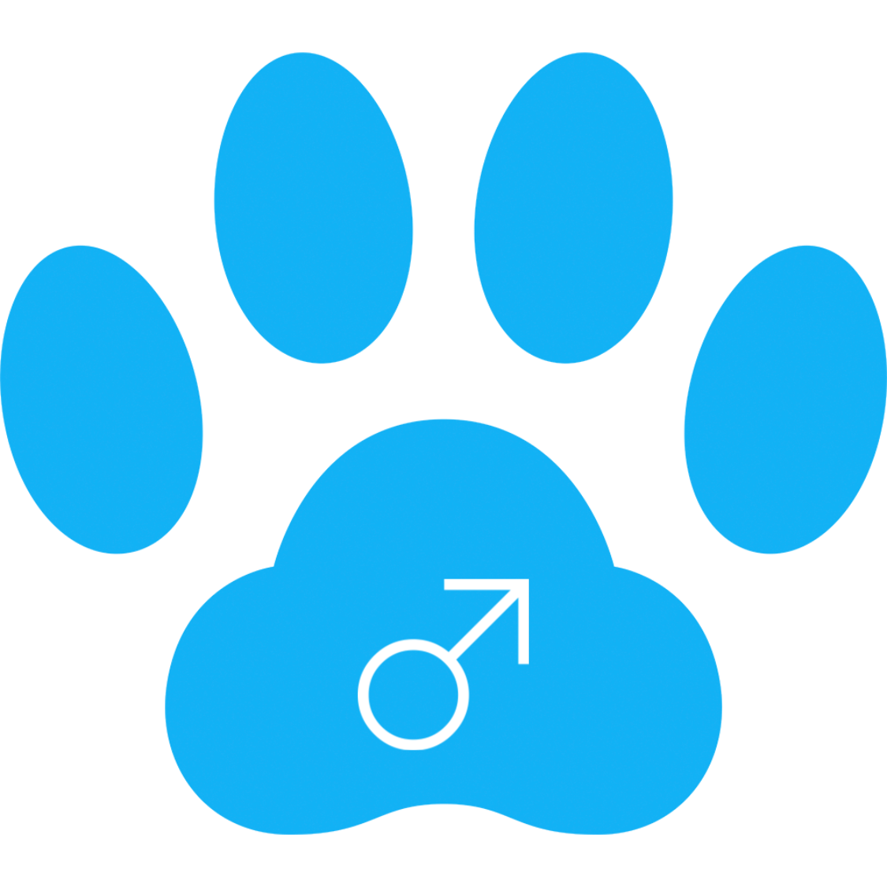
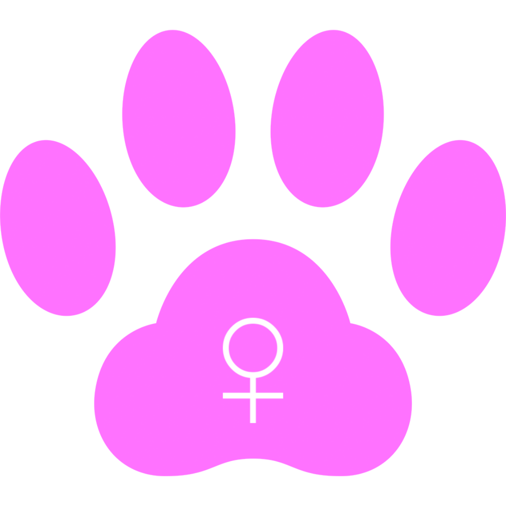

Chegan｜チェガン
Since 2013.9.1〜 (７歳）
○○が勤める会社の壁から救出。その後△△家で飼うことに。仔猫の頃は小さくて可愛かったが、今は大きくて可愛い。柑橘系の匂いが好き。名前の由来は韓国語で『最強』


Charu｜チャル
Since 2013.9.1〜 (７歳）
チェガンと同じく壁から救出。ある病気により、九死に一生を得た。メンバーのグッディーに対して、一方的に敵対心を持っている。名前の由来は韓国語で『可愛い』

Moffy｜モッフィー
Since 2014.7.24〜 (６歳）
チェガンとチャルの子ども。名前通り毛並みがモフモフで、グレーの毛色と胸元が白いのが特徴。近寄っただけでゴロゴロと喉を鳴らすほど甘えん坊。

Guddy｜グッディー
Since 2015.6.1〜 (５歳）
家の前をウロウロしていたところを保護。引き取り先が見つからず飼うことに。頻繁にメンバーのチャルから猫パンチをお見舞いされている。名前の由来は『Good Day』をもじったところからきている。

kinako｜きなこ
Since 2017.11.1〜 (３歳）
家の裏で”ミャーミャー”と鳴いていたところを保護。３回曲がった鍵しっぽと、口元のホクロが特徴。名前の由来は毛色からきている。